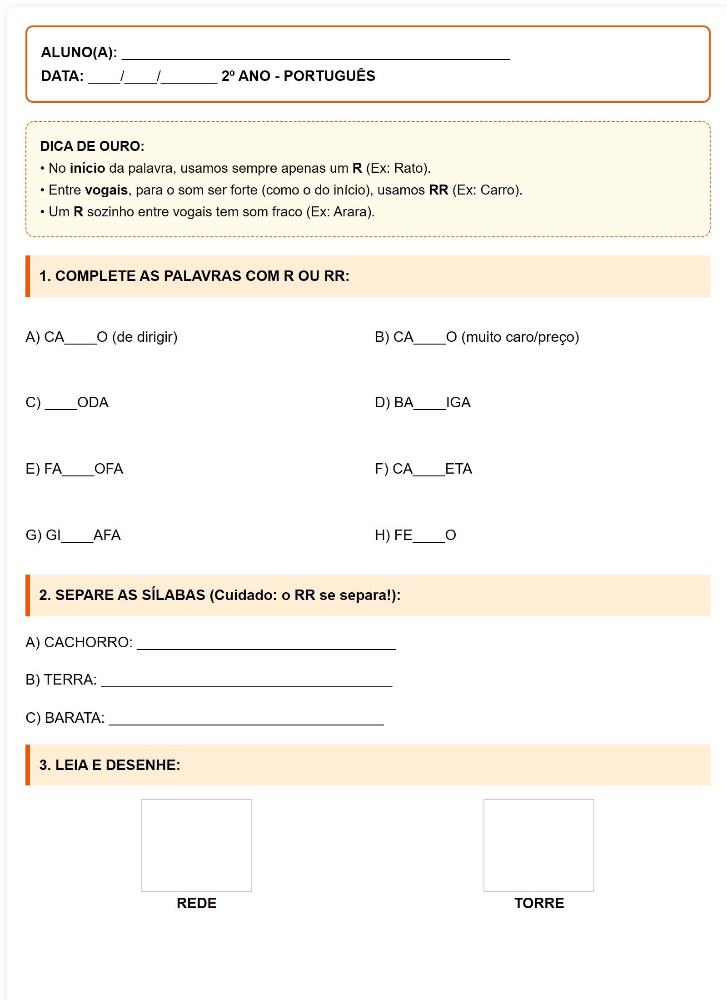

Desafio do R e RR
DICA DE OURO:
• No início da palavra, usamos sempre apenas um R (Ex: Rato).
• Entre vogais, para o som ser forte (como o do início), usamos RR (Ex: Carro).
• Um R sozinho entre vogais tem som fraco (Ex: Arara).
1. COMPLETE AS PALAVRAS COM R OU RR:
A) CA____O (de dirigir)
B) CA____O (muito caro/preço)
C) ____ODA
D) BA____IGA
E) FA____OFA
F) CA____ETA
G) GI____AFA
H) FE____O
2. SEPARE AS SÍLABAS (Cuidado: o RR se separa!):
A) CACHORRO: ________________________________
B) TERRA: ____________________________________
C) BARATA: __________________________________
3. LEIA E DESENHE:
Visualização da Folha de Atividade

Visualização da Folha de Atividade